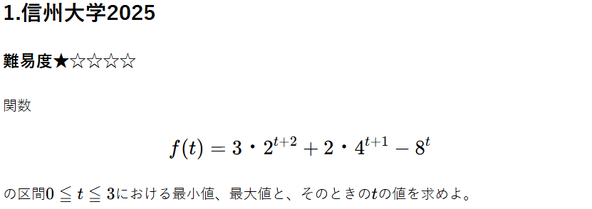

重要ポイント
最大最小を考えるためには、 $$ \ \begin{cases} 微分 + 増減表 \\ 平方完成 \end{cases} \ $$ をする必要がある。 このままだと複雑なので、 $$ 2^t = x $$ として、 $$ f(x) = 〇x^3 + □x^2 + △x + ◇ $$ の形を作る。これで微分しやすくなる。
解説
(1)
$$ 2^t = x $$ と置くと、 $$ f(x) = 12x + 8x^2 - x^3 $$ とできる。\( 0 ≦ t ≦ 3 \)から、 $$ 1 ≦ x ≦ 8 $$ 微分すると、 $$ f'(x) = -3x^2 + 16x + 12 $$ $$ = -(3x + 2)(x - 6) $$ $$ $$ よって以下のような表が得られる。
| \(x\) | \(1\) | \(6\) | \( 8 \) | ||
|---|---|---|---|---|---|
| \( f'(x) \) | + | + | 0 | - | - |
| \( f(x) \) | \( f(1) \) | ↗ | \( f(6) \) | ↘ | \( f(8) \) |
まとめ
最大最小問題は基本的に、
$$ 増減表を描く $$
ことを目標に解き進める。
今回はそのために
$$ 2^t = x $$
とおく。
\( 〇^t = x \)と置くときに注意するべき点は、
$$ xの範囲 $$
である。今回は\( t \)に範囲が与えられているので注目しやすいが与えられていないときは、
$$ x > 0 $$
を忘れて
これを意識すれば容易に解けるだろう。